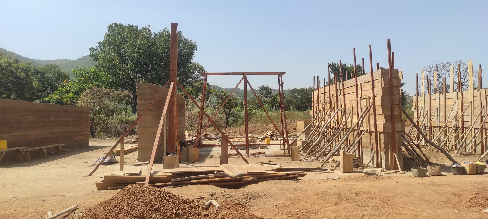

Escuela WaraqaWaraqa School
Una escuela construida con su propia comunidad, con la tierra de su propio suelo.A school built with its own community, from the earth of its own ground.
En Mahandougou, en el centro de Costa de Marfil, el proyecto parte de una idea sencilla: la mejor tecnología es la que la comunidad puede mantener.
In Mahandougou, in central Ivory Coast, the project starts from one simple idea: the best technology is the one the community can maintain.
En lugar de importar una solución cerrada, la escuela ordena y pone en valor saberes constructivos locales. Sus dos plantas se levantan con muros de Bloque de Tierra Comprimida (BTC) fabricados in situ y una estructura de madera ensamblada mediante uniones de caja y espiga, prácticamente sin acero.
Rather than importing a finished solution, the school organises and gives value to local building knowledge. Its two storeys rise with on-site Compressed Earth Block (CEB) walls and a timber structure assembled with mortise-and-tenon joints, with almost no steel.
La sección funciona como una máquina climática: una doble cubierta ventilada y la inercia de la tierra mantienen las aulas frescas en las horas de más calor, sin acondicionamiento mecánico.
The section works as a climatic machine: a double ventilated roof and the thermal mass of the earth keep classrooms cool through the hottest hours, with no mechanical conditioning.
- UbicaciónLocation
- Mahandougou, Côte d'Ivoire
- AñoYear
- 2022
- ProgramaProgramme
- Escuela · 2 plantasSchool · 2 storeys
- PromotorClient
- SUMUM ONG
- MaterialesMaterials
- BTC · maderaCEB · timber
- RolRole
- Co-diseño · dirección técnicaCo-design · site management

La escuela no se impone sobre el lugar: crece desde él.
The school does not impose itself on the place: it grows from it.
La tierra de las propias aulas se extrae del solar, los aleros profundos dan sombra a las galerías y el agua de lluvia se recoge para los meses secos. Todo el conjunto se piensa a la altura de los niños y de la comunidad que lo levanta y lo cuida.
The very earth of the classrooms comes from the plot, the deep eaves shade the galleries and rainwater is harvested for the dry months. The whole is conceived at the scale of the children and the community that builds and cares for it.
Construir se convierte en un acto pedagógico: la obra se organiza por fases junto a la comunidad, que aporta mano de obra y conocimiento. Cada elemento —del bloque de tierra a la cercha de madera— se piensa para poder repararse localmente, de modo que la escuela siga siendo suya mucho después de la inauguración.
Building becomes a teaching act: the work is staged together with the community, which provides labour and knowledge. Every element —from the earth block to the timber truss— is designed to be repaired locally, so the school stays theirs long after the opening day.


Una máquina climática de tierra y madera.
A climatic machine of earth and timber.
La doble cubierta ventilada y la inercia de los muros de BTC mantienen frescas las aulas en las horas de más calor, sin equipos mecánicos. El recorrido muestra cómo encajan sección, estructura y patios.
The double ventilated roof and the thermal mass of the CEB walls keep the classrooms cool through the hottest hours, with no mechanical equipment. The walkthrough shows how section, structure and courtyards fit together.